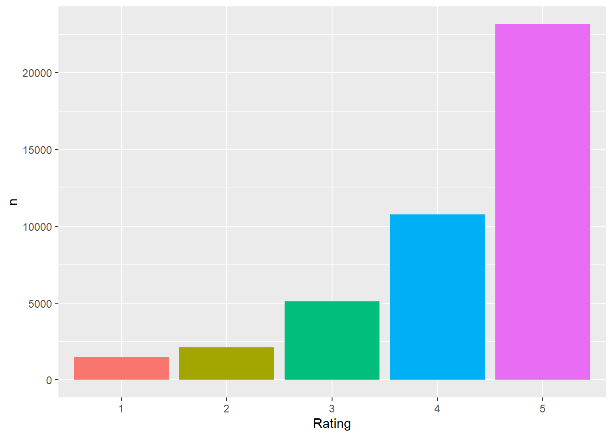
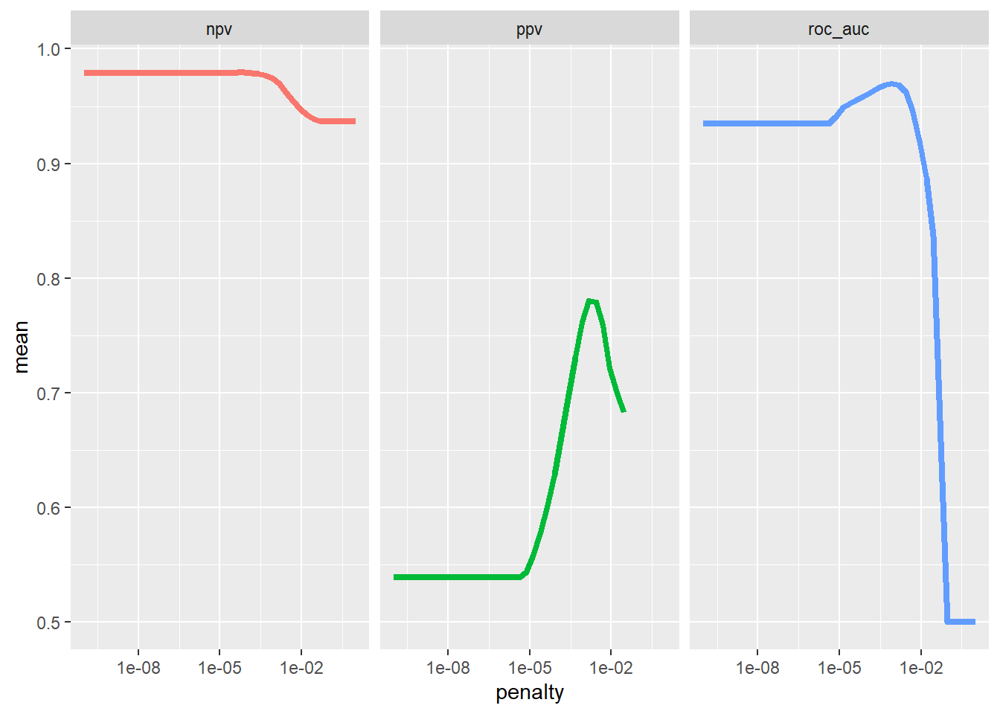
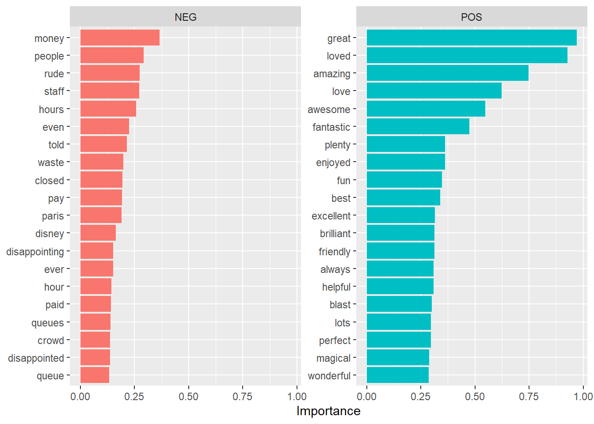

library(tidyverse)
library(tidymodels)
library(textrecipes)
library(glmnet)
library(doParallel)
library(vip)
disney <- read_csv("DisneylandReviews.csv")ML Disney Sentiments
Introduction
Taking guidance from Julia Silge this exercise aims to use a machine learning algorithm to explore the words that are most salient in 1* and 5* ratings. We will filter for those ratings, train on the majority of the data and then test our results on the remainder.
That is, the algorithm will try to spot the difference between positive and negative ratings, then test on data where it hasn’t been told which ratings are positive and which ones are negative.
We use a lasso regression to perform this analysis and we also run variants on the analysis 25 times before choosing the most effective one in predicting which rating is 5* and which is 1*. In general, don’t try to understand the maths (it’s certainly at the outer edges of my capacities) but check out the ML workflow.
First let’s load the libraries we will use and the dataset.
Explore the data
Let’s look at some reviews, then count the number of reviews for each rating.
disney %>%
filter(Rating == 1 | Rating == 5) %>%
sample_n(5) %>%
pull(Review_Text)[1] "We had a wonderful day at Disneyland, this was our first Disney experience so cannot offer any comparisons.The attention to detail in and on the way to the park is fantastic, the staff were all friendly and the stickers they give the children were a lovely touch. We were very impressed with the shows, especially the Lion King and the paint the night parade was excellent. Our son loved meeting the Star Wars characters. We spent a full day there and did most of what we wanted to. Another half day would have meant we covered everything."
[2] "Went there with my 8 year old kid. As soon as we reached this place his first statement was papa I dont want to go back . Beautiful place with lots of interesting rides. Adults also enjoy like kids. At first the ticket price seemed to be quite high. But when you visit this place it seems that the price is quite cheap for what u experience.I lost my camera in the park. After few minutes i was in panic I started looking around for it. After an hour I reached their lost and found department and was glad to know they already had my camera. One of the staff members had found it and handed over to the office. Thanks very much for returning me back my memories packed in that camera.Do wait till end in the evening as the fire works show is beautiful.The special MTR is also very charming. I still cherish my memories of this place a lot."
[3] "Visiting the 'happiest place on earth' was everything I'd hope it to be and more. Loved the parade and all the photo opportunities with the characters. Disneyland just brings out the child in everyone. There are queues for most of the rides but if you get a 'fast pass' you can go on other rides while you wait for your return time slot. Actually, there are queues for almost everything including most food outlets and the restrooms. The park is huge and involves lots of walking so I would definitely recommend wearing comfortable shoes and also take a jacket if your going in the fall winter as it can get cold in the evenings."
[4] "Absolutely amazing place, especially considering I wasn't too fussed about going originally and was bullied into it by the wife and kids!!We all absolutely loved it, even more so on the second day once we'd got our bearings. One recommendation would be to plan what you want to see and go on in advance, makes such a difference then blindly wandering round and joining random queues. Be prepared to queue for pretty much everything, especially the food but they do serve it relatively quickly (we budgeted 20 per head, per meal and we weren't far off).The light show in the evening is well worth staying for (starts at 11pm) but the scrum for the bus back to the hotel after wasn't great saw quite a few tempers getting fraught and when you have small kids it's not ideal...But on the whole, really, really impressed and will be going again."
[5] "My wife, infant daughter and I recently took in three days at the Disneyland parks. Had an amazing time, which is not hard to do since that is Disney's specialty. Though you pay a heavy price tag for that. I would definitely go back, even though we are more of a Walt Disney World family." disney %>%
mutate(Rating = factor(Rating)) %>%
group_by(Rating) %>%
count %>%
ggplot(., aes(x = Rating, y = n, fill = Rating)) +
geom_col(show.legend = FALSE)
We can see that there are far more 5* ratings than there are any other ratings. This will have an impact on the reliability of our work below.
Prepare the dataset
For this exercise we are just going to try and predict which words are most salient for 1* and 5* ratings. Everything else is filtered out. Then mostly using the tidymodels and text recipes we will prepare the data. Note the tidymodels library often splits up your making the recipe from actually acting on the recipe…
#|label: split_dataset
disney_polarised <- disney %>%
filter(Rating == 1 | Rating == 5) %>%
mutate(polar = case_when(Rating == 1 ~ "Negative",
Rating == 5 ~ "Positive"),
polar = factor(polar))Next we split between training and testing data. Note ‘set seed’ here: it is a process whereby the split is always the same rather than being random. It’s just best for reproducibility. In an actual process we would not do this.
set.seed(123)
review_split <- disney_polarised %>%
initial_split(., strata = polar)
review_train <- training(review_split)
review_test <- testing(review_split)Next we preprocess the dataset. Check out each step. You should be able to figure out what is happening given what we have done in class. step_normalize coerces the data into a normal distribution. Language data is never normally distributed but many ML processes needs it to be.
Now we create a workflow for performing the statistical analysis on the text data. This draws on the lasso algorithm in the glmnet library.
lasso_spec <- logistic_reg(penalty = tune(), mixture = 1) %>%
set_engine("glmnet")
lasso_wf <- workflow() %>%
add_recipe(review_rec) %>%
add_model(lasso_spec)
lasso_wf══ Workflow ════════════════════════════════════════════════════════════════════
Preprocessor: Recipe
Model: logistic_reg()
── Preprocessor ────────────────────────────────────────────────────────────────
5 Recipe Steps
• step_tokenize()
• step_stopwords()
• step_tokenfilter()
• step_tfidf()
• step_normalize()
── Model ───────────────────────────────────────────────────────────────────────
Logistic Regression Model Specification (classification)
Main Arguments:
penalty = tune()
mixture = 1
Computational engine: glmnet Now we prepare a ‘tuning’ process whereby we will run the algorithm above 25 times in different ways, so we can see which is best. This is important with ‘unlabelled’ data. In fact the process below is very handy if you want to create, say, a dictionary of positive and negative words.
lambda_grid <- grid_regular(penalty(), levels = 40)
set.seed(123)
review_folds <- bootstraps(review_train, strata = polar)
review_folds# Bootstrap sampling using stratification
# A tibble: 25 × 2
splits id
<list> <chr>
1 <split [18483/6851]> Bootstrap01
2 <split [18483/6797]> Bootstrap02
3 <split [18483/6785]> Bootstrap03
4 <split [18483/6810]> Bootstrap04
5 <split [18483/6802]> Bootstrap05
6 <split [18483/6815]> Bootstrap06
7 <split [18483/6829]> Bootstrap07
8 <split [18483/6788]> Bootstrap08
9 <split [18483/6882]> Bootstrap09
10 <split [18483/6821]> Bootstrap10
# ℹ 15 more rowsRun the analysis.
Be warned: this is very slow.
Now we run the analysis and collect the results.
doParallel::registerDoParallel()
set.seed(2023)
lasso_grid <- tune_grid(
lasso_wf,
resamples = review_folds,
grid = lambda_grid,
metrics = metric_set(roc_auc, ppv, npv)
)lasso_grid %>%
collect_metrics()# A tibble: 120 × 7
penalty .metric .estimator mean n std_err .config
<dbl> <chr> <chr> <dbl> <int> <dbl> <chr>
1 1 e-10 npv binary 0.979 25 0.000365 Preprocessor1_Model01
2 1 e-10 ppv binary 0.539 25 0.00493 Preprocessor1_Model01
3 1 e-10 roc_auc binary 0.935 25 0.00298 Preprocessor1_Model01
4 1.80e-10 npv binary 0.979 25 0.000365 Preprocessor1_Model02
5 1.80e-10 ppv binary 0.539 25 0.00493 Preprocessor1_Model02
6 1.80e-10 roc_auc binary 0.935 25 0.00298 Preprocessor1_Model02
7 3.26e-10 npv binary 0.979 25 0.000365 Preprocessor1_Model03
8 3.26e-10 ppv binary 0.539 25 0.00493 Preprocessor1_Model03
9 3.26e-10 roc_auc binary 0.935 25 0.00298 Preprocessor1_Model03
10 5.88e-10 npv binary 0.979 25 0.000365 Preprocessor1_Model04
# ℹ 110 more rowsExamining the analysis.
The picture below tells us a bit about how well the analysis ran. The answer is, well on ‘area under the curve’ and on positive words, but less well on negative words. You can read up on AUC here but in essence it’s a means of looking at ‘precision’ and ‘recall.’ That is, precision is the number of true positive results you got as a fraction of all the positive results your model declared. And recall is the ration of ‘true positives’ over all the actual positives (‘true positives’ plus ‘false negtives’).
A higher AUC is better, but a very high one might suggest that your model has ‘overfitted.’ That would mean your model might run very well on the training data but less well on any new data.
lasso_grid %>%
collect_metrics() %>%
ggplot(aes(penalty, mean, color = .metric)) +
geom_line(linewidth = 1.5, show.legend = FALSE) +
facet_wrap(~.metric) +
scale_x_log10()Warning: Removed 6 rows containing missing values (`geom_line()`).
We can choose which is the best model from the 50 we ran with our ‘bootstrapping’ process.
best_auc <- lasso_grid %>%
select_best("roc_auc")
best_auc# A tibble: 1 × 2
penalty .config
<dbl> <chr>
1 0.000838 Preprocessor1_Model28Which words are most salient?
Now let’s finalise our workflow based on our decision about which is the best model, fit it to the testing data and look at which words are best?
final_lasso <- finalize_workflow(lasso_wf, best_auc)
final_lasso══ Workflow ════════════════════════════════════════════════════════════════════
Preprocessor: Recipe
Model: logistic_reg()
── Preprocessor ────────────────────────────────────────────────────────────────
5 Recipe Steps
• step_tokenize()
• step_stopwords()
• step_tokenfilter()
• step_tfidf()
• step_normalize()
── Model ───────────────────────────────────────────────────────────────────────
Logistic Regression Model Specification (classification)
Main Arguments:
penalty = 0.000837677640068291
mixture = 1
Computational engine: glmnet final_lasso %>%
fit(review_train) %>%
extract_fit_parsnip() %>%
vi(lambda = best_auc$penalty) %>%
group_by(Sign) %>%
top_n(20, wt = abs(Importance)) %>%
ungroup() %>%
mutate(
Importance = abs(Importance),
Variable = str_remove(Variable, "tfidf_Review_Text_"),
Variable = fct_reorder(Variable, Importance)
) %>%
ggplot(aes(x = Importance, y = Variable, fill = Sign)) +
geom_col(show.legend = FALSE) +
facet_wrap(~Sign, scales = "free_y") +
labs(y = NULL)
How good was the model
We can also look at a ‘confusion matrix’ which will tell us how successful our model was at predicting 1* and 5* ratings from the words.
review_final <- last_fit(final_lasso, review_split)
review_final %>%
collect_metrics()# A tibble: 2 × 4
.metric .estimator .estimate .config
<chr> <chr> <dbl> <chr>
1 accuracy binary 0.969 Preprocessor1_Model1
2 roc_auc binary 0.973 Preprocessor1_Model1review_final %>%
collect_predictions() %>%
conf_mat(polar, .pred_class) Truth
Prediction Negative Positive
Negative 197 54
Positive 139 5772As you can see it did a pretty good job on 5* ratings but not quite so well on 1* ratings. Maybe this is a consequence of how the ratings are distributed in the data? Maybe positive sentiments are more explicitly expressed?
[1] "This sheet took 110 minutes and 5.63 seconds to run."